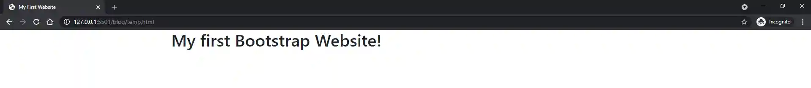

Developing and Deploying a Static Website with Bootstrap and Netlify
Technology Stack: HTML, CSS, JavaScript, Bootstrap, Netlify
Date Pending
In this post, I'll show you how I developed and deployed this website in three steps.
- Setting up - Visual Studio Code, GitHub, npm, Git, Bootstrap
- Developing - HTML, CSS, JavaScript
- Deploying - Netlify
Feel free to follow along and create your own website. It's fast, easy, and free!
Please note that these steps are written for Windows users.
Setting up
If you're a seasoned developer, you can probably skip most of this section. But if your new to development, let's get you set up.
Download an IDE (Visual Studio Code)
First, you will want to open (or download) an Integrated Development Environment (IDE). This is a fancy name for the software that will let you edit your code. Many developers use Visual Studio Code, and it's my tool of choice as well.
https://code.visualstudio.com/
Install a package manager (npm)
Now it's time to install npm (originally Node Package Manager). In an effort to keep things simple, let's just say we'll use npm to download and install stuff.
If you want to understand npm a little better, check out this stack overflow post.
Install a version control tool (Git)
Next, install Git. Git will help us with version control, making it easy to push and pull changes from our command line.
Create a code repository (GitHub)
Once you have everything installed, it's time to set up a code repository. For this example, we'll be using GitHub. Navigate to their website and set up an account, if you don't already have one. Then, follow the on-screen instructions to create a new repository.
You can look at my repository for this website as an example.
Clone your repository
We want to make changes to the code in our online code repository (GitHub) using our local machine's IDE (Visual Studio Code). To do that, we need to clone the repository to our local machine.
Navigate to your repository in GitHub. Here is my repository for this website again as an example. Click on the green button that says "Code". It should look similar to the button below.
Copy the HTTPS link that appears. It should look similar to the screenshot below, but with your repository information.
Open Visual Studio Code. You should be greeted with a welcome screen that has a link to clone a repository.

Click on clone repository... and paste the link from GitHub. You will be prompted to save the repository somewhere on your PC.
Install a responsive framework (Bootstrap)
Bootstrap is a front-end framework that helps to make your website responsive, ensuring your site will look great on various screen sizes. There are lots of ways to install Bootstrap, but let's take advantage of our shiny new package manager, npm.
Within Visual Studio Code, make sure you are in the folder where you
cloned your repository. Open the terminal using
Ctrl+Shift+`
or by clicking terminal > New Terminal in the top menu bar.
Within the terminal, verify npm installed correctly by writing the
command npm -v. You should get back a version number.
Now install Bootstrap using the command
npm install bootstrap --save.
For Bootstrap to work correctly, you will also need the JavaScript
library, jQuery. Install jQuery using the command
npm install jquery --save.
Summary
Our development environment is now set up! Here's a quick summary of everything we did:
- Downloaded Visual Studio Code to edit our code
- Installed npm to manage packages
- Installed Git to help with version control
- Created a code repository in GitHub
- Cloned the code repository to our local machine
- Installed Bootstrap to make our site responsive
Developing
We made it to the fun part! Time to start developing our website.
Create a homepage
Within Visual Studio Code, make sure you are in the folder where you cloned your repository. In the file explorer on the left-hand side, click on the symbol: to add a file and name it index.html. This will be the homepage for your website. Copy and paste the following code into your index.html and hit save.
Author's note - need to fix css and js references to hit the correct files in the node_modules folder, as well as to not show entire filepath. Also, add in a container, a row, and maybe a paragraph.
Render and view your homepage
In order to view your code in a browser, we will add an extension called Live Server. Click on the symbol: on the left-hand menu bar in Visual Studio Code to view extensions. Search for Live Server and click install. After it's done installing, restart Visual Studio Code.
Open index.html within Visual Studio Code, and click on the button: in the bottom right-hand tool bar. Your browser will open and you should see a rendering of your local code.
Author's note - need to come back and fix the following preview after I fix the code snippet above.
Understand the Bootstrap grid
TBD
Add in styling with CSS
TBD
Push your code to GitHub
TBD
Note on branches - if you are working with other developers, you should learn about branches. It is not a best practice to work out of the main branch (which is where we're working); however - it's your site, and you can do what you want. I work out of the main branch on my own website, because I'm the only one here and I am living on the edge.
Build your dream site
You have everything you need to build a beautiful, responsive site. If this is your first time working with Bootstrap, I recommend creating your site from scratch until you understand the framework. Once you have the basics, you can start customizing templates that other developers have created and shared.
Downloading the template for thomasneff.com
I am now going to deviate from the straight-forward instructional nature of this post to show you how I built my personal website. You're welcome to continue following along, but I recommend writing about yourself instead of using my information.
TBD
Customizing the content for thomasneff.com (HTML)
TBD
Customizing the styling for thomasneff.com (CSS)
TBD
Customizing the scripting for thomasneff.com (JavaScript)
TBD
Adding in the portfolio / blog for thomasneff.com
Is this a portfolio or a blog? Even I don't know. To be honest, I didn't really want to have a blog. So I'm calling it a portfolio.
Summary
TBD
Deploying
It's time to make our website available to the masses. There are lots of ways to deploy a static website, but I'm going to recommend one that my friend Matt Rodgers from matthewdavidrodgers.com turned me on to: Netlify.
Deploying with Netlify - an anecdote
Netlify is so easy that when I had a time sensitive emergency to deploy a JavaScript pickle calculator (I wish I could tell you more about that, but this is a portfolio - not a blog - remember?) I turned to Netlify. Even though it was my first time using the tool and I had to go through the sign up process, I had a working, live website in under 10 minutes.
Deploying with Netlify
Here are your Netlify instructions:
- Go to netlify.com and sign up using your GitHub account
- Click on the New site from Git button and select GitHub
- Select your repository
- Click deploy site
Netlify will auto-generate a domain name for you, which you can change later. The initial deployment will take a few minutes. In the future, every time you make changes to your main branch in GitHub, Netlify will automatically deploy in a matter of seconds.
Congratulations!
If you followed along, you now have a live, functioning website for the world to enjoy. If you are just a reader, hopefully you have a better understanding of how I developed and deployed thomasneff.com.
Thanks for reading!
Return to Portfolio